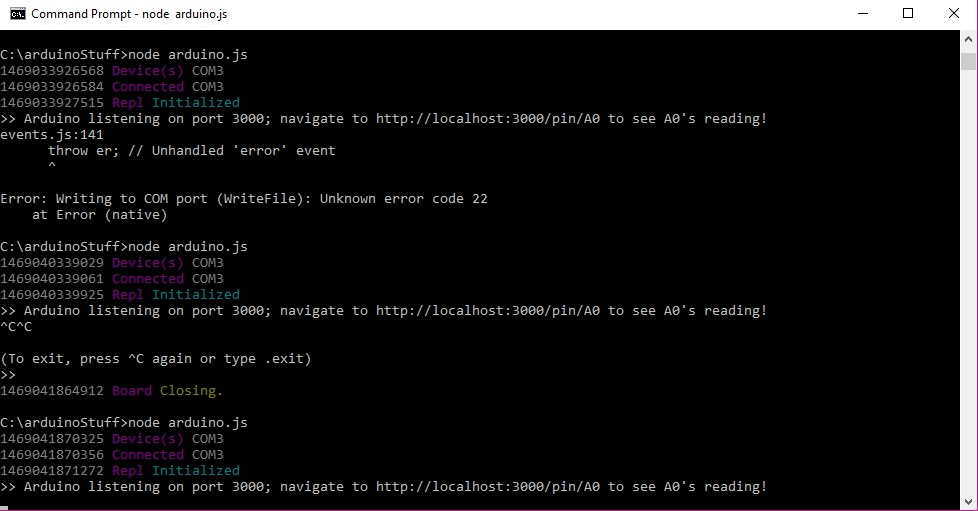
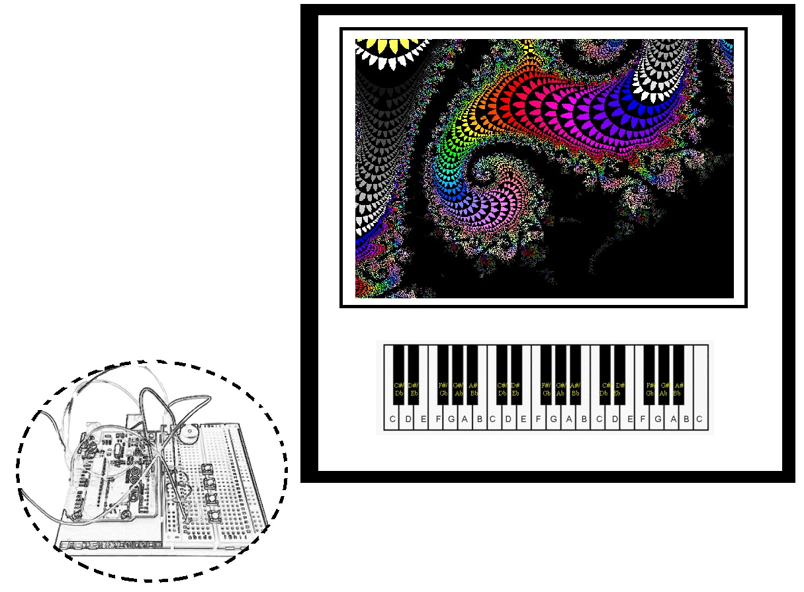
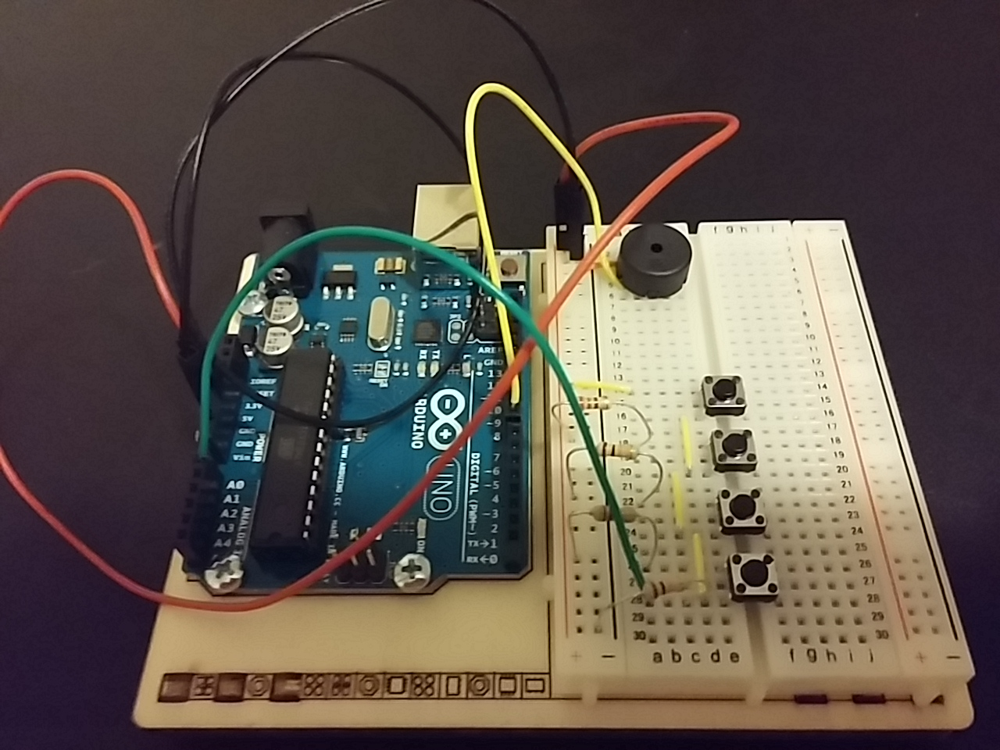
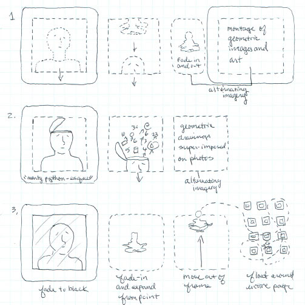

Week Seven
Presentation code is here.
- What did you accomplish today (1 AUG)?
- Working on presentation
- Working on project
Week Six
Project code is here.
- What did you accomplish today (27 JUL)?
- Shaunalynn helped me modify this.
- Working on presentation
- Working on project
- What do you aim to have done by next session?
- project illustration animations (.css or .js or both TBD)
- make keyboard image map work with animations
- What can we (the teaching team) do to help?
- What did you accomplish today (25 JUL)?
- Forked, cloned and explored reveal.js and zoom.js
- Working on presentation
- What do you aim to have done by next session?
- project illustration animations (.css or .js or both TBD)
- make keyboard image map work with animations
- What can we (the teaching team) do to help?
Week Five

Node Error Screen-shot
What I accomplished today (20 JUL): the class exercise... here. (Need to be connected to Arduino board.)
- What information did I need to complete the exercise--Arduino Uno board, etc.
- What did I learn?
- If the node arduino.js is allowed to time-out, it will throw an error message about writing to the COM; however, the node must be killed; then re-started. It won't work if it is re-started after it has timed-out.
Also, refining the input generation from the light-emitting diode needs to be done in generateInput.js vs. the script in input-to-background-color.html
Also, see below... - What information did I need to complete the exercise--data model, schema, which application-programming interfaces (APIs)?
- Examples: latitude, longitude, "sunrise" and "sunset"
- Choose the visualization you want to work with.
- input-to-velocity.html
- Decide what input you want to generate digitally.
- I wanted to use data indicating the orbital location of the international space station to control the velocity.
- Blackbox the code you'll need to write.
- I needed variables which define orbital location. I found some here.
- Then start building.
- Alec and Shaunalynn showed me how to use the Fetch API and work around the "No 'Access-Control-Allow-Origin' header...."
- I had to figure-out how to grab the variables and insert them into the code.
- I had never used JSON. I found the JSON.parse method. (Which, as it turns-out, has nothing to do with what I wanted it to do! *So, Alec showed me how to modify the code so that it will redraw the circles every second; based upon the successive differences between the sums of coordinates each time they are fetched (every second) from the ISS API. I wanted the circles to be dynamically redrawn thus; I had been trying to do it with JSON.parse--not understanding that it was just parsing the strings as opposed to identifying the latitude and longitude. However, it had appeared to have been working due to the frequency of redrawing.
What I accomplished today (18 JUL + *20 JUL): the class exercise... here.
Week Four
What I accomplished today (13 JUL): I found information to begin coding for my project.
- How do I tie individual images together so that they move in a coordinated manner via mouseover?
- http://www.tutorialspoint.com/javascript/javascript_animation.htm
- http://paperjs.org/
- How do I interpret audio from users' mics?
- https://github.com/cwilso/PitchDetect
- How do I interpret audio from Arduino input?
- http://breakoutjs.com/
- How do I tie individual images together so that they move in a coordinated manner via audio input?
- Hmm...
Answers to Journal Questions (11 JUL)
- What did you accomplish today?
- Molly showed me how to trigger multiple animations in .css by either using the animationend event or the animation-delay property; also using eventlisteners in .js
- What do you aim to have done by next session?
- I will draw some images by hand for my project, and think about how I want the images to animate.
- What can we (the teaching team) do to help?
- Anything you do will be interesting, but I don't need anything at the moment specifically for my project. I will utilize the snippet request forms after I have stared at the same code for a long time without producing intended results. :-D
Week Three
Answers to Journal Questions
- What did you accomplish today?
- Shaunalynn and I brainstormed about my project. We came-up with some really good ideas. It's been a great exchange, because we're both interested in the project idea. I read the pair programming bits, and I really think that trust and shared interests are key. It seems that it would either be really great, or it would be unbearable. Sometimes, people need to bang their heads on their own in order to gain a greater understanding of the subject. I'm definitely a solo head-banger and somewhat introverted, but I'm open to working with like-minded others. However, I would resent being forced to work that intimately and on a regular basis with someone with whom I would have to really struggle to sync--it would be unproductive at best.
- What do you aim to have done by next session?
- I was trying to produce something acceptable with the codepen for the people card, but I was unsuccessful.
- What can we (the teaching team) do to help?
- I'm not accustomed to asking for help, so it's on me; not you. Also, there are some things that I just have to work through on my own in order to regain what I've lost. For class, I think it would be really cool if you would teach a thing about editing jQuery files to eliminate the unnecessary bits for specific applications.
Answers to the Project Questions

Project Mock-up Fig. 1
- What is your idea?
- I plan to create a GUI for an Arduino project. I have made a simple keyboard instrument with four keys; emitting frequencies for middle C, D, E and F. (I may decide to add to and change the frequencies.) The interface will control the instrument, so that when a GUI key is pressed the Arduino keyboard will emit the corresponding frequency. Reciprocally, when an Arduino key (button) is pressed the GUI will indicate that the corresponding key has been pressed, and the computer will emit the corresponding frequency. Additionally, pressed keys will result in addtional imagry generated within a defined space in the GUI. The imagery will be generated in response to the key pressed and the duration of time that the key is depressed. I haven't yet determined the exact nature of the imagery.
- Who is its audience, and what do they value?
- I am not sure who the audience will be. I just want to do it.
- How will you know if it is successful?
- If the interface works as I intend, and also if the generated imagery is interesting.
- What is your plan for going about it?
- I will look at other interfaces coded for Arduino projects.
Week Two

Arduino Project
Link to a cool digital thing...
Epic Games' Unreal Engine is available for free. They also provide tons of tutorials for it. The Unreal game engine was used for my favorite video games: the Bioshock games.
Project doings...
I had to replace the piezo transducer which came with the Arduino kit with a 9V piezo transducer in order to produce sound without sputters.
Week One

People Card Sketches
Selim is a mathematics teacher. He especially enjoys Geometry. He appreciates viewing Voronoi diagrams and artworks by Wassily Kandinsky, Victor Vasarely and Maurits Cornelis Escher. He regularly practices meditation and considers himself to be a deeply spiritual person.
- Selim's image moves out of the frame in the downward direction and is replaced by a generic meditating figure--posed seated with legs intertwined, arms outstretched and resting on knees with palms facing upward. The meditating figure then fades and reappears alternately (pulsing) with images which appeal to Selim; ending with the meditating figure.
- Selim's head opens a la Monty Python from just above the eyes; revealing a well of numbers, letters, symbols, equations and geometric shapes which float above his head as it moves in the downward direction out of the frame. A few of the floating numbers, shapes, etc. remain in the frame and are rearranged and superimposed on a photographic image fading in with corresponding shapes and meaning.
- Selim's image fades to black and a generic meditating figure appears by expanding from a point in the center of the void. The meditating figure then moves out of the frame and floats to random coordinates on the page.